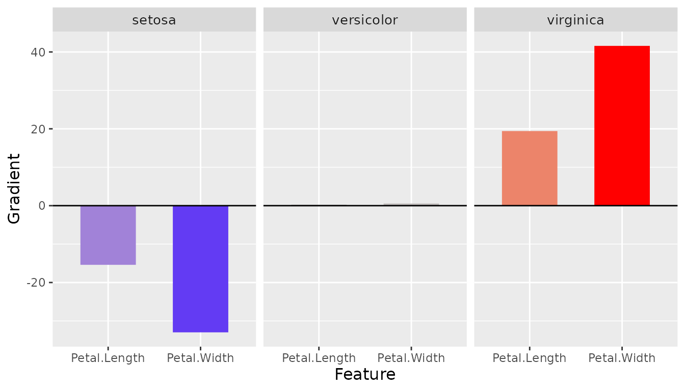
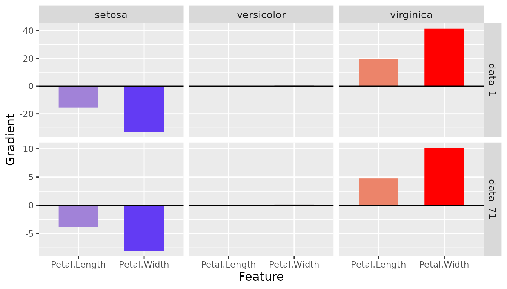
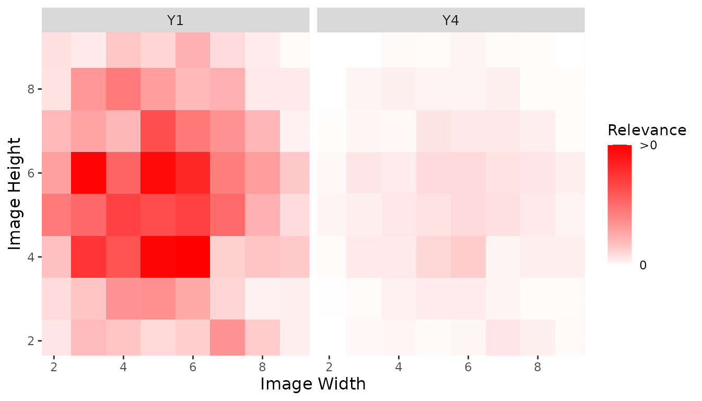
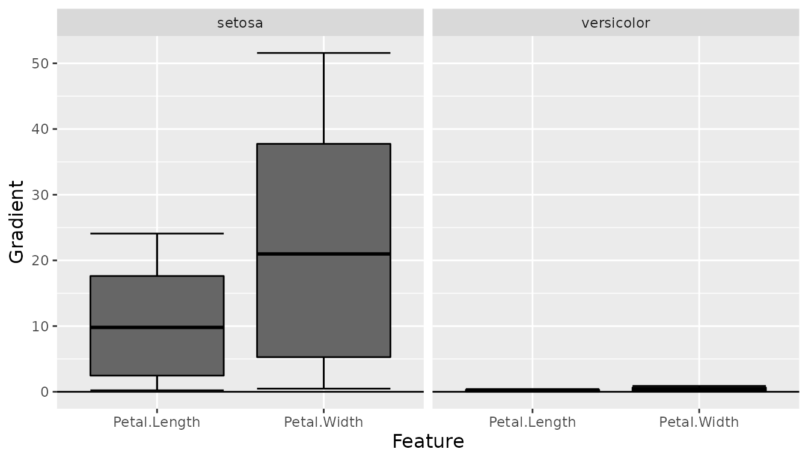
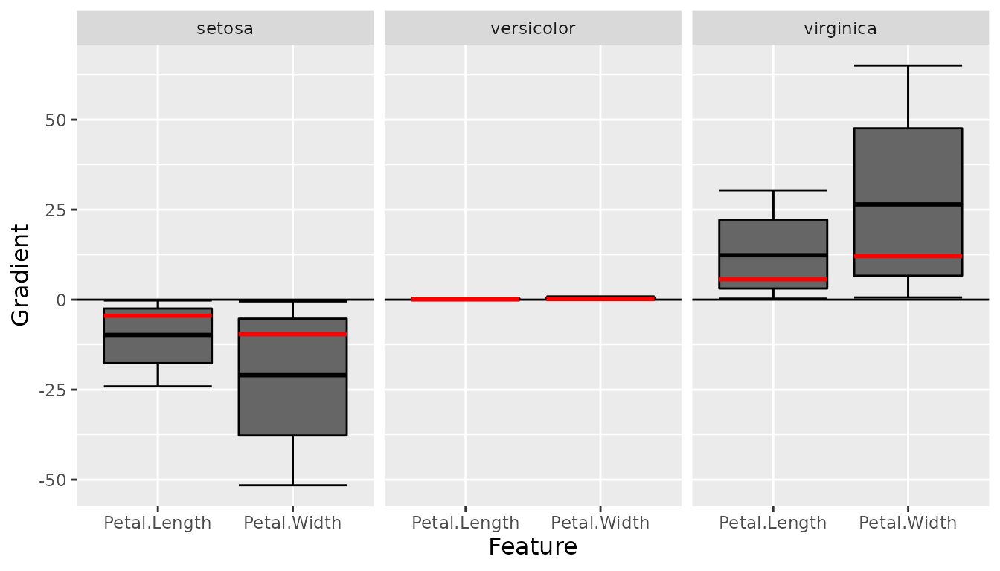

In the last decade, there has been a tremendous rush and growth in machine learning. Almost every year, new architectures break records on scientific test data sets, and the number of layers continues to grow through regularization methods making today’s neural networks far more complex than an original linear or logistic model. Nevertheless, the scientific focus is more on the predictive power than on the interpretability and the respective methods that already exist for the interpretation of single predictions or the whole neural networks are only sparsely or rarely implemented in the R programming language. The innsight package addresses this lack of interpretable machine learning methods in R (similar to iNNvestigate for Python) and provides the most popular methods for neural networks trained in R for analysis in one unified interface.
The steps for explaining individual predictions with the provided methods are unified in this package and follow a strict scheme. This will hopefully allow any user a smooth and easy introduction to the possibilities of this package. The steps are:
# Step 1: Model creation and converting
model = ...
converter <- Converter$new(model)
# Step 2: Apply selected method to your data
result <- Method$new(converter, data)
# Step 3: Plot the results
plot(result)
boxplot(result)The innsight package aims to be as flexible as possible and independent of any particular deep learning package in which the passed network was learned or defined. For this reason, there are several ways in this package to pass a neural network and then interpret their predictions.
torch
Currently, only models created by torch::nn_sequential are accepted. However, the most popular standard layers and activation functions are available:
nn_linear
nn_conv1d, nn_conv2d (but only with pading_mode = "zeros" and numerical padding)nn_max_pool1d, nn_max_pool2d (both only with default arguments for padding (0), dilation (1), return_indices (FALSE)) and ceil_mode (FALSE))nn_avg_pool1d, nn_avg_pool2d (both only with default arguments for padding (0), return_indices (FALSE)) and ceil_mode (FALSE))nn_flatten (see torch issue #716 and use classname = "nn_flatten")nn_dropout
nn_relu, nn_leaky_relu, nn_softplus, nn_sigmoid, nn_softmax, nn_tanh (contact me if you need any more)If you want to create an instance of the class Converter with a torch model that meets the above conditions, you have to keep the following things in mind:
In a torch model, the shape of the inputs is not stored; hence it must be specified with argument input_dim within the initialization of Converter.
If no further arguments are set for the Converter instance, default labels are generated for the input ('X1', 'X2', …) and output names ('Y1', 'Y2', … ). In torch models this information is not stored or often it is not even present in the training data. In the converter, however, there is the possibility (argument input_names and output_names) to pass the names, which will then be used in all results and plots created by this object.
library(torch)
library(innsight)
torch_manual_seed(123)
# Create model
model <- nn_sequential(
nn_linear(3, 10),
nn_relu(),
nn_linear(10, 2, bias = FALSE),
nn_softmax(2)
)
# Convert the model
conv_dense <- Converter$new(model, input_dim = c(3))
# Convert model with input and output names
conv_dense_with_names <-
Converter$new(model, input_dim = c(3),
input_names = list(c("Price", "Weight", "Height")),
output_names = list(c("Buy it!", "Don't buy it!")))
# Show output names
conv_dense_with_names$model_dict$output_names
#> [[1]]
#> [1] "Buy it!" "Don't buy it!"Unfortunately, at the moment (torch = 0.6.0) it is not possible to use a flatten module in nn_sequential, because it is only implemented as a function (torch_flatten). For this reason we define our own module as described in torch issue #716. To ensure that our package recognizes this module as a flattening layer, classname = "nn_flatten" must be set.
nn_flatten <- nn_module(
classname = "nn_flatten",
initialize = function(start_dim = 2, end_dim = -1) {
self$start_dim <- start_dim
self$end_dim <- end_dim
},
forward = function(x) {
torch_flatten(x, start_dim = self$start_dim, end_dim = self$end_dim)
}
)
# Create CNN for images of size (3, 28, 28)
model <- nn_sequential(
nn_conv2d(3, 5, c(2, 2)),
nn_relu(),
nn_max_pool2d(c(1,2)),
nn_conv2d(5, 6, c(2, 3), stride = c(1, 2)),
nn_relu(),
nn_conv2d(6, 2, c(2, 2), dilation = c(1, 2), padding = c(5,4)),
nn_relu(),
nn_avg_pool2d(c(2,2)),
nn_flatten(),
nn_linear(48, 5),
nn_softmax(2)
)
# Convert the model
conv_cnn <- Converter$new(model, input_dim = c(3, 10, 10))keras
Keras models created by keras_model_sequential or keras_model are accepted. Within these functions, the following layers are allowed to be used:
layer_dense
layer_conv_1d, layer_conv_2d
layer_max_pooling_1d, layer_max_pooling_2d
layer_average_pooling_1d, layer_average_pooling_2d
layer_flatten
layer_dropout
activation) and not as a standalone layer like e.g. layer_activation_relu. The following are accepted as arguments: "relu", "softplus", "sigmoid", "softmax", "tanh", "linear" (open an issue if you need any more)Analogous to a torch model, no names of inputs or outputs are stored in a keras model, i.e. if no further arguments are set for the Converter instance, default labels are generated for the input (e.g. 'X1', 'X2', …) and output names ('Y1', 'Y2', … ). In the converter, however, there is the possibility (argument input_names and output_names) to pass the names, which will then be used in all results and plots created by this object.
library(keras)
tensorflow::set_random_seed(42)
#> Loaded Tensorflow version 2.7.0
# Create model
model <- keras_model_sequential()
model <- model %>%
layer_dense(10, input_shape = c(5), activation = "softplus") %>%
layer_dense(8, use_bias = FALSE, activation = "tanh") %>%
layer_dropout(0.2) %>%
layer_dense(4, activation = "softmax")
# Convert the model
conv_dense <- Converter$new(model)
#> Skipping Dropout ...
library(keras)
# Create model
model <- keras_model_sequential()
model <- model %>%
layer_conv_2d(4, c(5,4), input_shape = c(10,10,3), activation = "softplus") %>%
layer_max_pooling_2d(c(2,2), strides = c(1,1)) %>%
layer_conv_2d(6, c(3,3), activation = "relu", padding = "same") %>%
layer_max_pooling_2d(c(2,2)) %>%
layer_conv_2d(4, c(2,2), strides = c(2,1), activation = "relu") %>%
layer_flatten() %>%
layer_dense(5, activation = "softmax")
# Convert the model
conv_cnn <- Converter$new(model)neuralnet
The usage with nets from the package neuralnet is very simple and straightforward, because the package offers much fewer options than torch or keras. The only thing to note is that no custom activation function can be used. However, the package saves the names of the inputs and outputs, which can of course be overwritten with the arguments input_names and output_names when creating the converter object.
library(neuralnet)
data(iris)
# Create model
model <- neuralnet(Species ~ Petal.Length + Petal.Width, iris,
linear.output = FALSE)
# Convert model
conv_dense <- Converter$new(model)
# Show input names
conv_dense$model_dict$input_names
#> [[1]]
#> [1] "Petal.Length" "Petal.Width"
# Show output names
conv_dense$model_dict$output_names
#> [[1]]
#> [1] "setosa" "versicolor" "virginica"The innsight package provides the following tools for analyzing black box neural networks based on dense or convolution layers:
Gradient : Calculation of the model output Gradients with respect to the model inputs including the attribution method Gradient x Input:\[ \begin{align} \text{Gradient}(x)_i^C &= \frac{\partial f(x)_C}{\partial x_i}\\ \text{Gradient x Input}(x)_i^C &= x_i \cdot \text{Gradient}(x)_i^C \end{align} \]
SmoothGrad : Calculation of the smoothed model output gradients (SmoothGrad) with respect to the model inputs by averaging the gradients over number of inputs with added noise (including SmoothGrad x Input):\[ \text{SmoothGrad}(x)_i^C = \mathbb{E}_{\varepsilon \sim \mathcal{N}(0, \sigma^2)}\left[\frac{\partial f(x + \varepsilon)_C}{\partial (x + \varepsilon)_i}\right] \approx \frac{1}{n} \sum_{k=1}^n \frac{\partial f(x + \varepsilon_k)_C}{\partial (x + \varepsilon_k)_i} \] with \(\varepsilon_1, \ldots \varepsilon_n \sim \mathcal{N}(0, \sigma^2)\).
LRP : Back propagation the model output to the model input neurons to obtain relevance scores for the model prediction which is known as Layer-wise Relevance Propagation:\[ f(x)_C \approx \sum_{i=1}^d R_i \] with \(R_i\) relevance score for input neuron \(i\).
DeepLift : Calculation of a decomposition of the model output with respect to the model inputs and a reference input which is known as Deep Learning Important FeaTures (DeepLift):\[ \Delta f(x)_C = f(x)_C - f(x_\text{ref}) = \sum_{i=1}^d C_i \] with \(C_i\) contribution score for input neuron \(i\) to the difference-from-reference model output.
ConnectionWeights : This is a naive and old approach by calculating the product of all weights from an input to an output neuron and then adding them up (see Connection Weights).By default, the last activation function is not taken into account for all data-based methods. Because often this is the sigmoid/logistic or the softmax function, which has with growing distance from 0 increasingly smaller gradients, which leads to the so-called saturation problem. But if you still want to consider the last activation function, use the argument ignore_last_act = FALSE.
For the data with channels, it is not possible to determine exactly on which axis the channels are located. Internally all data and the converted model are in the data format ‘channels first’, i.e. directly after the batch dimension (batch_size, channels, input_dim). In case you want to pass data with ‘channels last’ (e.g. for MNIST-data (batch_size, 28, 28, 3)), then you have to indicate that with argument channels_first in the applied method.
It can happen with very large and deep neural networks that the calculation for all outputs requires both the entire memory and takes a very long time. But often, the results are needed only for certain output nodes. By default, only the results for the first 10 outputs are calculated, which can be adjusted individually with the argument output_idx by passing the relevant output indices.
# Make sure that Example 1 from the section on neuralnet and one example
# with CNNs were run last
# Apply method 'Gradient' for the dense network
grad_dense <- Gradient$new(conv_dense, iris[-c(1,2,5)])
# Apply method 'Gradient x Input' for CNN
x <- torch_randn(c(10,3,10,10))
grad_cnn <- Gradient$new(conv_cnn, x, times_input = TRUE)
# Make sure that Example 1 from the section on neuralnet and one example
# with CNNs were run last
# Apply method 'SmoothGrad' for the dense network
smooth_dense <- SmoothGrad$new(conv_dense, iris[-c(1,2,5)])
# Apply method 'SmoothGrad x Input' for CNN
x <- torch_randn(c(10,3,10,10))
smooth_cnn <- SmoothGrad$new(conv_cnn, x, times_input = TRUE)
# Make sure that Example 1 from the section on neuralnet and one example
# with CNNs were run last
# Apply method 'LRP' for the dense network
lrp_dense <- LRP$new(conv_dense, iris[-c(1,2,5)])
# Apply method 'LRP' for CNN with alpha-beta-rule
x <- torch_randn(c(10,10,10,3))
lrp_cnn <- LRP$new(conv_cnn, x, rule_name = "alpha_beta", rule_param = 1,
channels_first = FALSE)
# Make sure that Example 1 from the section on neuralnet and one example
# with CNNs were run last
# Define reference value
x_ref <- array(colMeans(iris[-c(1,2,5)]), dim = c(1,2))
# Apply method 'DeepLift' for the dense network
deeplift_dense <- DeepLift$new(conv_dense, iris[-c(1,2,5)], x_ref = x_ref)
# Apply method 'DeepLift' for CNN
x <- torch_randn(c(10,3,10,10))
deeplift_cnn <- DeepLift$new(conv_cnn, x)Once a method object has been created, the results can be returned as an array, data.frame, or torch_tensor, and can be further processed as desired. In addition, for each of the three sizes of the inputs (1D, 2D, or 3D) suitable plot and boxplot functions based on ggplot2 are implemented. Due to the complexity of higher dimensional inputs, these plots and boxplots can also be displayed as an interactive plotly plots by using the argument as_plotly.
Each instance of the interpretability methods have the class method get_result, which is used to return the results. You can choose between the data formats array, data.frame or torch_tensor by passing the name as an character for argument type.
# Get result (make sure 'grad_dense' is defined!)
result_array <- grad_dense$get_result()
# Show for datapoint 1 and 71 the result
result_array[c(1,71),,]
#> , , setosa
#>
#> Petal.Length Petal.Width
#> 1 -17.705021 -37.914467
#> 71 -1.752118 -3.752078
#>
#> , , versicolor
#>
#> Petal.Length Petal.Width
#> 1 0.30512863 0.65341860
#> 71 0.03019602 0.06466337
#>
#> , , virginica
#>
#> Petal.Length Petal.Width
#> 1 22.329956 47.818550
#> 71 2.209809 4.732201
# Get result as data.frame (make sure 'grad_cnn' is defined!)
result_data.frame <- lrp_cnn$get_result("data.frame")
# Show the first 5 rows
head(result_data.frame, 5)
#> data feature_h feature_w channel class value
#> 1 data_1 H1 W1 C1 Y1 1.408816e-05
#> 2 data_2 H1 W1 C1 Y1 1.124055e-05
#> 3 data_3 H1 W1 C1 Y1 3.590281e-06
#> 4 data_4 H1 W1 C1 Y1 1.057909e-05
#> 5 data_5 H1 W1 C1 Y1 1.460757e-05
# Get result (make sure 'deeplift_dense' is defined!)
result_torch <- deeplift_dense$get_result("torch_tensor")
# Show for datapoint 1 and 71 the result
result_torch[c(1,71),,]
#> torch_tensor
#> (1,.,.) =
#> 60.1352 -1.0364 -75.8438
#> 54.5763 -0.9406 -68.8328
#>
#> (2,.,.) =
#> -5.5242 0.0952 6.9673
#> -6.8194 0.1175 8.6008
#> [ CPUFloatType{2,2,3} ]The package innsight also provides methods for visualizing the results. By default a ggplot2-plot is created, but it can also be rendered as an interactive plotly plot with the as_plotly argument. You can use the argument output_idx to select the indices of the output nodes for the plot. In addition, if the results have channels, the aggr_channels argument can be used to determine how the channels are aggregated.
Note: If you want to make a change to the results before plotting, you can get the results with Method$result (torch tensor!), change it accordingly, and then save it back to the attribute Method$result as a torch tensor.
Plot result for the first data point and all outputs:
(make sure grad_dense is defined!)
plot(smooth_dense, output_idx = 1:3)

# Plot result for the first data point and first and fourth output
# (make sure 'lrp_cnn' is defined!)
plot(lrp_cnn, aggr_channels = 'norm', output_idx = c(1,4))
Plot result for the first data point and first two outputs:
(make sure ‘smooth_dense’ is defined!)
boxplot(smooth_dense, output_idx = 1:2)
# Use no preprocess function (default: abs) and plot reference data point
boxplot(smooth_dense, output_idx = 1:3, preprocess_FUN = identity,
ref_data_idx = c(55))
Same as plotly.
In addition, you have a drop-down menu to select other data points you can define the indices for the drop-down menu with individual_data_idx.